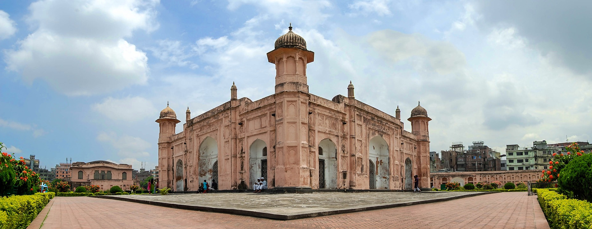

Lalbagh
Lalbagh Fort (also Fort Aurangabad) is an incomplete 17th-century Mughal fort complex that stands before the Buriganga River in the southwestern part of Dhaka, Bangladesh. The construction was started in 1678 AD by Mughal Subahdar Muhammad Azam Shah, who was a son of Emperor Aurangzeb and later emperor himself.

Ahsan Manzil
Ahsan Manzil used to be the official residential palace and seat of the Nawab of Dhaka. The building is situated at Kumartoli along the banks of the Buriganga River in Dhaka, Bangladesh. Construction was started in 1859 and was completed in 1872. It was constructed in the Indo-Saracenic Revival architecture.